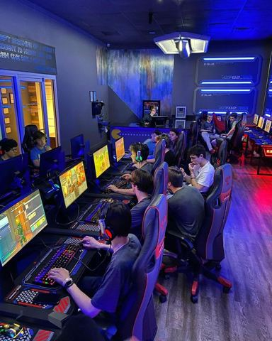
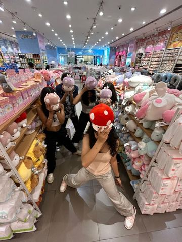
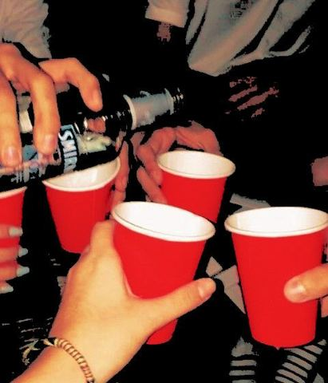
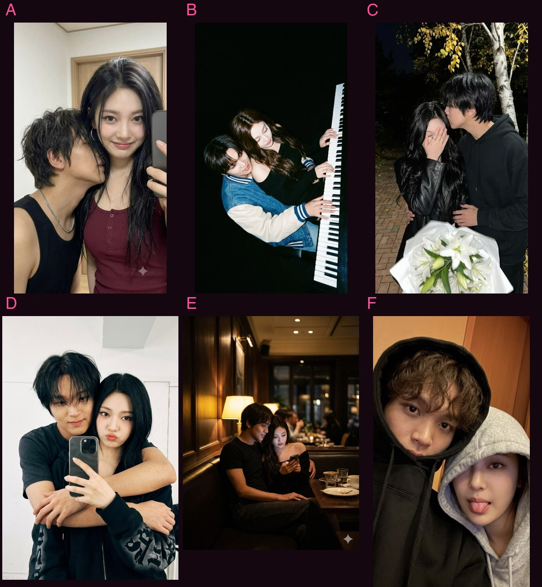
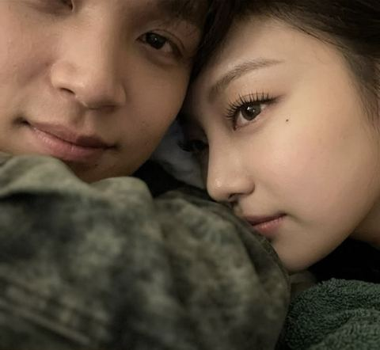
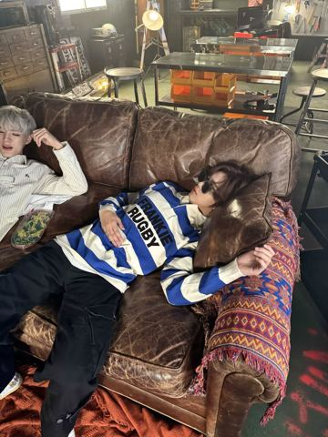
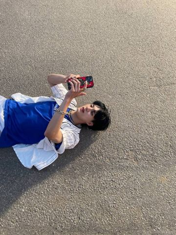
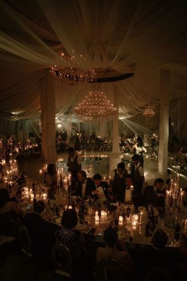

Candidates from the Runners World site for each epilogue post. Reply with the codes you want (like "3a, 5a, 9b"). Kat's picks (Nov 3) have a white border and a "Kat's pick" tag; each post says what was chosen. Under each photo is its Runners World file and its original SUgram caption.
1
post-r-1-team-photo
12/1 · posted by @SUesports
Five college students posing together in a gaming lab, rows of monitors and RGB keyboards behind them; one mid-laugh, one with hands in her sleeves, one in a backwards cap; a staged team photo, autumn.
1a is the closest setting (gaming lab with people at the desks), but nobody is posing. 1b is the esports team posing, in a store. 1e is the empty lab.
Open: nothing picked. Kat has a team selfie at a restaurant; if she drops it in, the line gets reworded to match.

1a
782d3056c057cdf625390350df9f47f0.jpg
(not used on the site, no caption)

1b
esportsteam-outshopping-wearingfunhats-posing.jpg
(not used on the site, no caption)
1c
sugram/jenos posts/sigmachiselfie.jpg
@jen0l33 attendance proof. jaemin made everyone fit.
1d
solar-atgaminglab.jpg
@SUesports Main support player Solar steals the spotlight AGAIN with an impressive 19-1 play in GM ranked.
1e
su-esports-lab.webp
(not used on the site, no caption)
2
post-r-2-red-party
12/5 · posted by jen0l33
A frat-house living room lit red at night, a big punch bowl up close in the foreground, Christmas lights, a party starting behind it.
No punch bowl anywhere in the set. 2a is jen0l33's own red-cup shot; 2c is an unused Sigma house with string lights.
Picked: 2a. In the game.

2aKat's pick
redsolocups-drinking.jpg
@jen0l33 sigma chi party supply check. we are ready. you are invited. probably.
@sollee the alpha phi stairs are apparently an acceptable reading spot. learned this after sitting down.
4
post-r-4-antlers-selfie
12/5 · posted by jaemin
A blurry flash selfie of four guys in reindeer-antler headbands, grinning, at a crowded house party at night.
No antlers anywhere in the set. 4a is the right four guys in a flash photo; 4e is the only one with Christmas hats (Alpha Phi girls, from a Christmas carousel).
Open: nothing picked for the post. 4e is the Alpha Phi girls' group-chat picture.
4a
markjaeminhaechanjeno-sigmachiparty.jpg
@haechanah sigma chi's finest. jaemin said smile. i said no.
4b
sugram/jenos posts/sigmachiselfie.jpg
@jen0l33 attendance proof. jaemin made everyone fit.
4c
jaeminhaechanjenomark.jpg
@jen0l33 sigma chi accountability post. this is what we look like.
@sollee the christmas we missed. also, alpha phi conflict resolution.
5
post-r-5-solchan
12/12 · posted by @solar
A close two-person photo indoors at night, warm low light; one person turned half away from the lens, the other looking straight into it; casual, nothing staged. (only sometimes)
5a was never used on the site: close, warm, one looking at the lens.
Picked: Solchan A (UniverseHub-Images/Solchan/b16e057c8ef3af150d99b5d7289ba5cd.jpg), from the six below. In the game; the line's description matches it.


5a
solarhaechancloseupselfie.jpg
(not used on the site, no caption)
5b
solarandhaechan-selfie.jpg
@sollee he grabbed my phone and took it himself. this is the result.
@jen0l33 jaemin after sigma chi party planning. he did not plan anything. he watched me plan and then went to sleep.

8c
haechanlayingonsigmachicouch-withsunglasses.jpg
(not used on the site, no caption)
8d
haechan-sunglasses-sigmachiparty.jpg
@haechanah sigma chi rule one: protect your eyes.

8e
sugram/jenos posts/jeno-ground-level-content.jpg
@jen0l33 CONTENT TEAM DOWN. SEND HELP.
9
post-r-9-quad-snow
12/15 · posted by SUanon
A snowy college quad on a gray winter morning, a stone bell tower, snowflakes hanging in the air, students stopped on the paths looking up with phones raised.
No bell tower in any snow photo. 9b has snow hanging in the air at night with people looking up. 9a, 9c and 9e come from Solar's Christmas posts.
@haechanah formal. she said flowers were unnecessary. clearly wrong.

10e
sugram/sunews posts/alphasig-formal.jpg
@SUnews alpha phi x sigma chi formal is officially underway! candlelight, black tie, and plenty of familiar faces arriving together. some pairings really do clean up better than others!
11
Solchan post (pending)
December · posted by Solar + Haechan
The Solar + Haechan post for the "post before Danielle" moment. Not in the doc yet; candidates are festive Solar + Haechan photos.
11a and 11b-11c come from Solar's canon Christmas carousels. 11d (Christmas-light hug) is tied only to a loose 'camping camera roll' caption.
 1c
1c